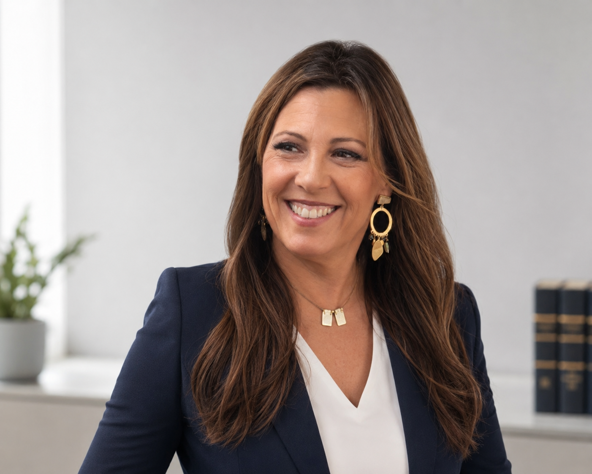

Procuradora de los Tribunales · Sevilla
Procuradora de los Tribunales
Nº Colegiada 337 · Sevilla · Colegiada desde 1994
Más de treinta años de trayectoria procesal
Seleccione su perfil. Le mostramos exactamente lo que necesita.
Le explicamos en qué jurisdicción actúa, cuándo es obligatoria la procuraduría y cómo se desarrolla el proceso desde la primera consulta.
Ver áreas de actuaciónTreinta años siendo la primera opción de los despachos que no toleran fallos. Respuesta en 24 horas, toda la jurisdicción, un único interlocutor.
Ver condiciones de colaboración
María Magdalena Escudero Nocea · Procuradora Nº 337
Desde su colegiación en 1994, María Magdalena Escudero Nocea ha construido una de las trayectorias más sólidas y reconocidas en la Procuraduría sevillana. Más de tres décadas de ejercicio ininterrumpido ante los Juzgados y Tribunales de Sevilla la posicionan como referencia de excelencia en la representación procesal.
Su profundo conocimiento del ordenamiento jurídico, el dominio de los procedimientos en todas las jurisdicciones y la relación de confianza consolidada con todos los operadores judiciales garantizan a cada cliente una representación de primer nivel: ágil, precisa y absolutamente comprometida con sus intereses.
«La Procuraduría es la columna vertebral del proceso judicial. Un error de representación puede costar una causa. María Magdalena Escudero Nocea lleva treinta años sin cometer ese error.»
Como Procuradora de los Tribunales, María Magdalena Escudero Nocea representa a sus clientes ante cualquier órgano jurisdiccional de Sevilla —sin excepción de jurisdicción, instancia o procedimiento.
Análisis inicial del asunto, evaluación de la documentación y diagnóstico sobre la vía procesal más adecuada para la defensa de sus intereses.
Coordinación con su abogado para definir la estrategia de representación, los plazos y las actuaciones necesarias en cada instancia judicial.
Presencia activa en todas las diligencias procesales, gestión ágil de notificaciones y comunicación constante sobre el estado del procedimiento.
Tramitación de la resolución final, gestión de recursos si proceden y ejecución efectiva de las sentencias favorables hasta su cumplimiento íntegro.
La procuradora es el enlace entre el despacho y el juzgado. Una mala elección genera retrasos, errores procesales y responsabilidad compartida. María Magdalena Escudero Nocea lleva treinta años siendo la primera opción de los despachos sevillanos que no toleran fallos.
Si su despacho opera en Sevilla o tiene asuntos ante los tribunales sevillanos, esta es la colaboración que necesita.
Testimonios de letrados y despachos que llevan años derivando sus asuntos sevillanos a María Magdalena Escudero Nocea.
Llevamos más de doce años derivándole asuntos civiles y de familia. Jamás ha fallado un plazo, jamás ha habido una notificación perdida. En este tiempo ha gestionado cientos de expedientes para nosotros y la confianza es absoluta. No concibo tener otro procurador en Sevilla.
Trabajo en derecho laboral y los plazos en lo social son implacables. Magdalena entiende eso mejor que nadie. Cuando le encargo un asunto sé que está cubierto desde el primer momento. La comunicación es inmediata y siempre proactiva: me avisa antes de que yo tenga que preguntar. Eso en este trabajo es oro.
Empecé a trabajar con ella al abrir mi despacho de penal. Era joven y no conocía bien el sistema. Ella me explicó cómo funcionan los juzgados sevillanos mejor que nadie. Hoy, diez años después, sigo contando con ella para todos mis asuntos penales en Sevilla. Una profesional de referencia sin ninguna duda.
Respuestas directas sobre procuraduría, honorarios y colaboración con despachos de abogados.
| Cuantía del asunto | Provisión estimada |
|---|---|
| Cuantía indeterminada Procedimientos sin cuantificación | Desde 150 € |
| Hasta 3.000 € | 80 – 150 € |
| De 3.001 a 15.000 € | 150 – 350 € |
| De 15.001 a 60.000 € | 350 – 700 € |
| De 60.001 a 150.000 € | 700 – 1.400 € |
| Más de 150.000 € | Consultar |
Importes orientativos. El arancel se aplica sobre la cuantía fijada por el juzgado y varía según tipo de procedimiento, instancia y número de actuaciones. Actos específicos (embargos, notificaciones, escritos de trámite) se facturan por módulo conforme al RD 1373/2003.
Responderemos en un plazo de 24 horas hábiles.